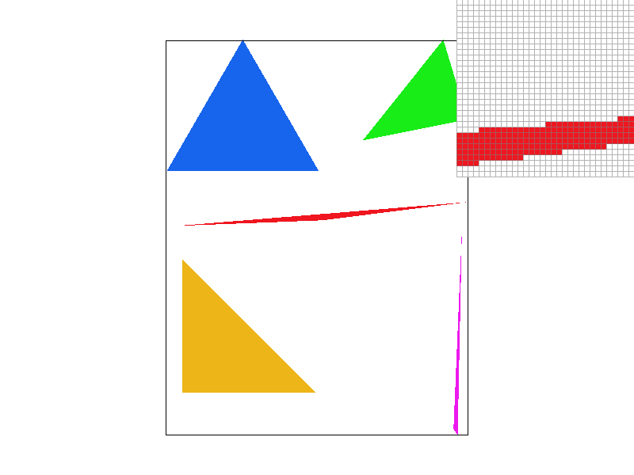
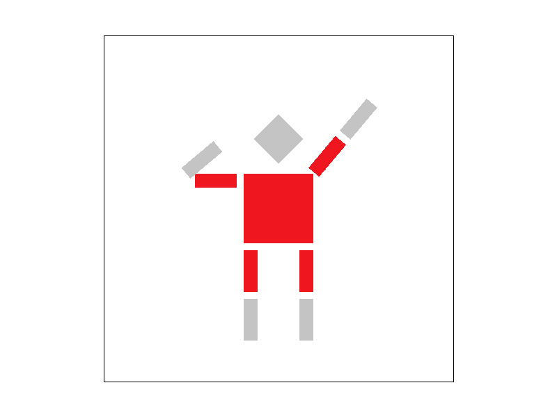

CS184/284A Spring 2025 Homework 1 Write-Up
Link to webpage: cs184.eecs.berkeley.edu/sp25
Link to GitHub repository: cs184.eecs.berkeley.edu/sp25

Overview
Give a high-level overview of what you implemented in this homework. Think about what you've built as a whole. Share your thoughts on what interesting things you've learned from completing the homework.Task 1: Drawing Single-Color Triangles
When writing my code, I drew inspiration from the lecture material, specifically lecture 2, slides 35-52. These slides illustrate a double for-loop that iterates over the maximum bounds for x and y. If a sample point is inside the triangle, it is filled with a color.
I made slight modifications to the for-loop, instead of iterating through the entire sample space, I start x and y at their minimum values. Inside the loops, I offset the sample points x and y coordinates by 0.5 and then compute three line equations to determine whether the sample point lies within the triangle. If the point is inside the triangle, I call fill_pixel.
Regarding the helper functions I created, they serve two purposes: improving code readability and providing functionality for rasterize triangle.
auto line = [orientation](float x, float y, float xI, float yI, float dX, float dY)
{
return orientation * (-(x - xI) * dY + (y - yI) * dX);
};
The line function calculates the equation of a line while also accounting for orientation to handle both clockwise and counterclockwise cases.
auto inside = [](float L0, float L1, float L2)
{
return (L0 >= 0) && (L1 >= 0) && (L2 >= 0);
};
The inside function implements the three-line test from the lecture. It checks whether all three line equations L1, L2, L2 contain the sample point.
|  |
Task 2: Antialiasing by Supersampling
Walk through your supersampling algorithm and data structures. Why is supersampling useful? What modifications did you make to the rasterization pipeline in the process? Explain how you used supersampling to antialias your triangles.
To account for supersampling in rasterize_triangle(), I modified my code from Task 1 by adding an additional nested loop that iterates over the square root of the sample rate. Instead of directly filling a pixel on the screen based on whether it is inside the triangle, we now take multiple subsamples per pixel, average them, and write the final color to the provided sample_buffer
Several other functions also needed updates to support supersampling. For example, set_sample_rate() and set_framebuffer_target() were modified to account for the sample rate when calculating the buffer size, using width * height * sample_rate instead of just width * height.
Additionally, resolve_to_framebuffer() underwent significant changes to incorporate supersampling, ensuring that the final color values are averaged correctly before being written to the framebuffer.

|

|

|
Task 3: Transforms
Create an updated version of svg/transforms/robot.svg with cubeman doing something more interesting, like waving or running. Feel free to change his colors or proportions to suit your creativity. Save your svg file as my_robot.svg in your docs/ directory and show a png screenshot of your rendered drawing in your write-up. Explain what you were trying to do with cubeman in words.
|  |

|
My Cubeman is striking a rising hero pose inspired by the popular Japanese children's show Ultraman, with one arm to the side and the other raised to the sky. I also changed the head and parts of the legs and arms to gray to match Ultraman's color scheme.
Task 4: Barycentric coordinates
Explain barycentric coordinates in your own words and use an image to aid you in your explanation.

|

|
From what I remember from the discussion, barycentric coordinates are kind of like a game of tug-of-war. For example, let's say we have three friends forming a triangle, and you're attached to three ropes being pulled by them. Your position is determined by how hard each friend is tugging. In other words, each vertex A,B,C has its own weights alpha, beta, and gamma which determine the position within the triangle.
Task 5: "Pixel sampling" for texture mapping
Explain pixel sampling in your own words and describe how you implemented it to perform texture mapping. Briefly discuss the two different pixel sampling methods, nearest and bilinear. Comment on the relative differences. Discuss when there will be a large difference between the two methods and why.
You can think of pixel sampling as a way to pick values from a 2D texture and place the respective values onto a 3D surface.
Nearest Sampling: The nearest texel is selected by rounding the UV coordinates to the nearest integer in texture space. This is done by converting the UV coordinates to texture space by multiplying them by the texture width and height, then rounding to the nearest integer coordinates to determine the corresponding texel.
Bilinear Sampling: We sample the four nearest texels and blend them together. The weights s and t are calculated based on the sample point's proximity to each texel. We then perform linear interpolation [LERP] in the x-direction and interpolate the results in the y-direction.
Compared to bilinear sampling, nearest sampling produces harder edges or a more "pixelated" look, while bilinear sampling results in a smoother, more blended output. The differences become especially noticeable when the sample rate is 16 pixels.

|

|

|

|
Task 6: "Level Sampling" with mipmaps for texture mapping
Explain level sampling in your own words and describe how you implemented it for texture mapping.
You can think of level sampling as a way to select the appropriate resolution level based on viewing distance. I once again took heavy inspiration from the lecture and used an equation given to us to determine the appropriate mipmap level: D = log2 L, where L is the maximum rate of change of the derivatives of u and v.
You can now adjust your sampling technique by selecting pixel sampling, level sampling, or the number of samples per pixel. Describe the tradeoffs between speed, memory usage, and antialiasing power between the three various techniques.
For pixel sampling: P_NEAREST will be faster than P_BILINEAR due to the way the algorithm is set up. Nearest sampling only considers one nearby texel, while bilinear sampling samples four texels and interpolates them. The trade-off, however, is that bilinear sampling does a much better job at antialiasing, as it produces smoother results and avoids the jagginess and pixelation seen with nearest sampling.
For level sampling: L_ZERO is the fastest and uses the least memory, as it only uses the base texture. L_NEAREST comes second in terms of speed, as it only looks up one level. However, it is tied in memory usage with L_LINEAR, as both use the entire mipmap chain. L_LINEAR is the slowest but provides the best antialiasing

|

|

|

|
Additional Notes (please remove)
- You can also add code if you'd like as so:
code code code -
If you'd like to add math equations,
- You can write inline equations like so: \( a^2 + b^2 = c^2 \)
- You can write display equations like so: \[ a^2 + b^2 = c^2 \]